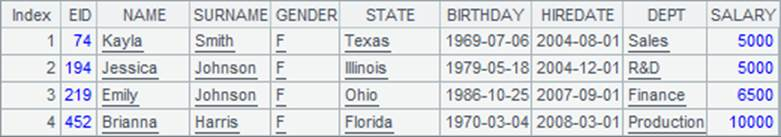

Since multiple threads of execution can increase efficiency, then will it be improved more significantly with more threads? Let¡¯s run a test and see.
|
|
A |
B |
|
1 |
=file("PersonnelInfo.txt") |
|
|
2 |
=now() |
|
|
3 |
fork to(4) |
=A1.import@t(;A3:4) |
|
4 |
|
return B3.select(City=="San Diego") |
|
5 |
=A3.conj() |
=interval@ms(A2,now()) |
|
6 |
|
|
|
7 |
=now() |
|
|
8 |
fork to(400) |
=A1.import@t(;A8:400) |
|
9 |
|
return B8.select(City=="San Diego") |
|
10 |
=A8.conj() |
=interval@ms(A7,now()) |
The 2nd to 5th lines perform multithreaded execution with 4 threads while the 7th to the 10th lines perform one with 400 threads. Both A5 and A10 get the same result as that in the previous section. Now let¡¯s check the computing time estimated in B5 and B10:

A8¡¯s doesn¡¯t increase efficiency in spite of using so many threads for a multithreaded opeation; on the contrary, the efficiency decreases. The computer has limited CPU capacity, but too many threads have to wait in queue for being executed and they also use the CPU resources. That¡¯s why the efficiency lags rather than increases. In actual use, good performance can be achieved with the number of threads being a little fewer than that of CPU cores.